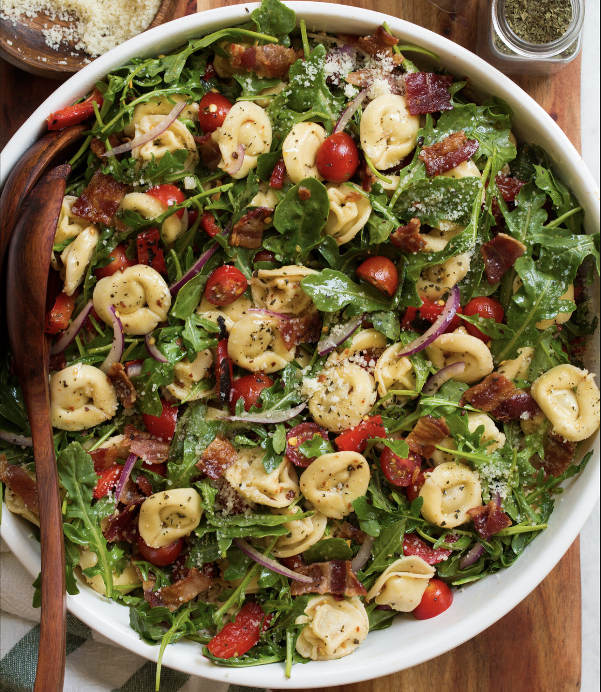

приготовление:
-
Вскипятить в большой кастрюле воду. Добавить 1 упаковку тортеллони (я использую La Famiglia Rana Aubergine Parmigiana Tortelloni, 250 г) и варить 2 минуты.
-
Переложить в салатную миску 120–150 г салатного микса. При желании слегка измельчить зелень ножом или кухонными ножницами.
-
Слить жидкость со 100 г консервированной кукурузы и добавить её в миску. Нарезать 200 г томатов и добавить к салату.
-
Вымыть 150 г сахарного горошка, срезать кончики, разрезать стручки на небольшие кусочки и добавить в миску.
-
Готовые тортеллони аккуратно откинуть на дуршлаг, дать немного остыть и добавить к салату.
-
Разрезать 1 авокадо, удалить косточку и кожуру, размять мякоть вилкой. Добавить 1 ч. л. лимонного сока, соль и чёрный перец, затем переложить пюре в салат.
-
Заправить салат 1 ст. л. бальзамического уксуса и 1 ст. л. оливкового масла. При желании вместо них использовать любимую салатную заправку. Аккуратно перемешать.